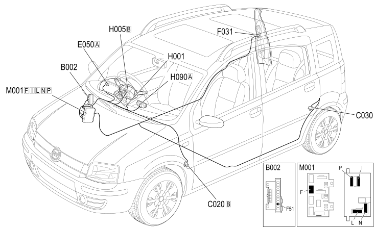

E2031 REAR FOG LAMPS - COMPONENT LOCATION
- Path
- Electrical equipment > 1 ELECTRICAL FUNCTIONS > E20 INTERIOR LIGHTING > E2031 REAR FOG LAMPS > E2031 REAR FOG LAMPS - COMPONENT LOCATION
- Kind
- component location drawing
- Applies to
- all engines; all production periods; only with equipment: Right hand drive
- Interactive page
- https://sloeber94.github.io/elrnDB-fPnd/en/#/169002423
Applies to: all engines; all production periods; only with equipment: Right hand drive
Component Location

COMPONENTS
Component code | Description | Reference to the assembly |
|---|---|---|
Junction unit under dashboard | ||
Passenger side dashboard earth | - | |
LEFT REAR EARTH | - | |
ENGINE CONTROL AND MANAGEMENT SYSTEMS | ||
RIGHT. REAR LIGHT CLUSTER (FIXED PART) | ||
H1 | Ignition switch | |
Steering column switch unit | ||
Switch control unit | See H90 SWITCH CONTROL UNIT | |
BODY COMPUTER |
Topics linked from this page (14)
- 5505A multi-function components
- 5505C vehicle compartment wiring
- 5520 ENGINE STARTING
- 5540A LIGHTING
- 5550A stalk unit
- 5560B analogue control panel
- B002 JUNCTION UNIT UNDER DASHBOARD
- C020 PASSENGER SIDE DASHBOARD EARTH
- C030 LEFT REAR EARTH
- E050 INSTRUMENT PANEL
- F031 RIGHT REAR LIGHT CLUSTER (FIXED PART)
- H005 STEERING COLUMN SWITCH UNIT
- H090 SWITCH CONTROL PANEL
- M001 BODY COMPUTER